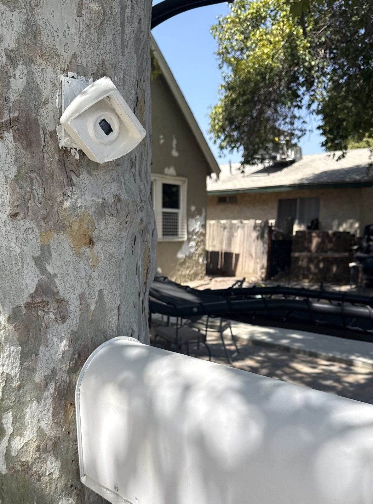
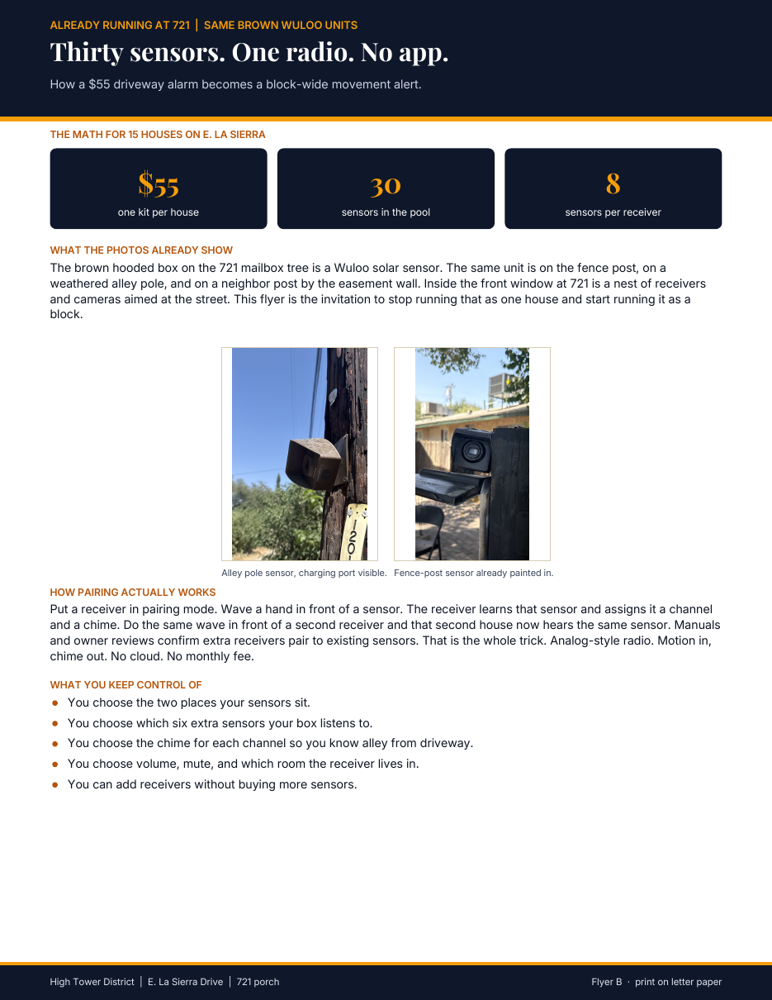
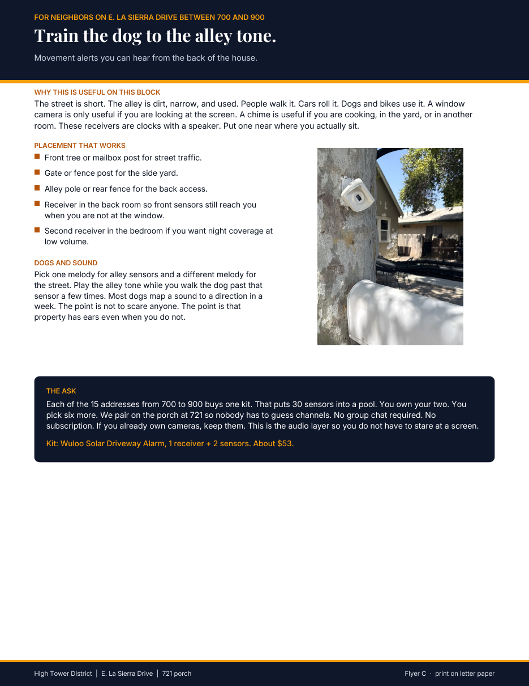
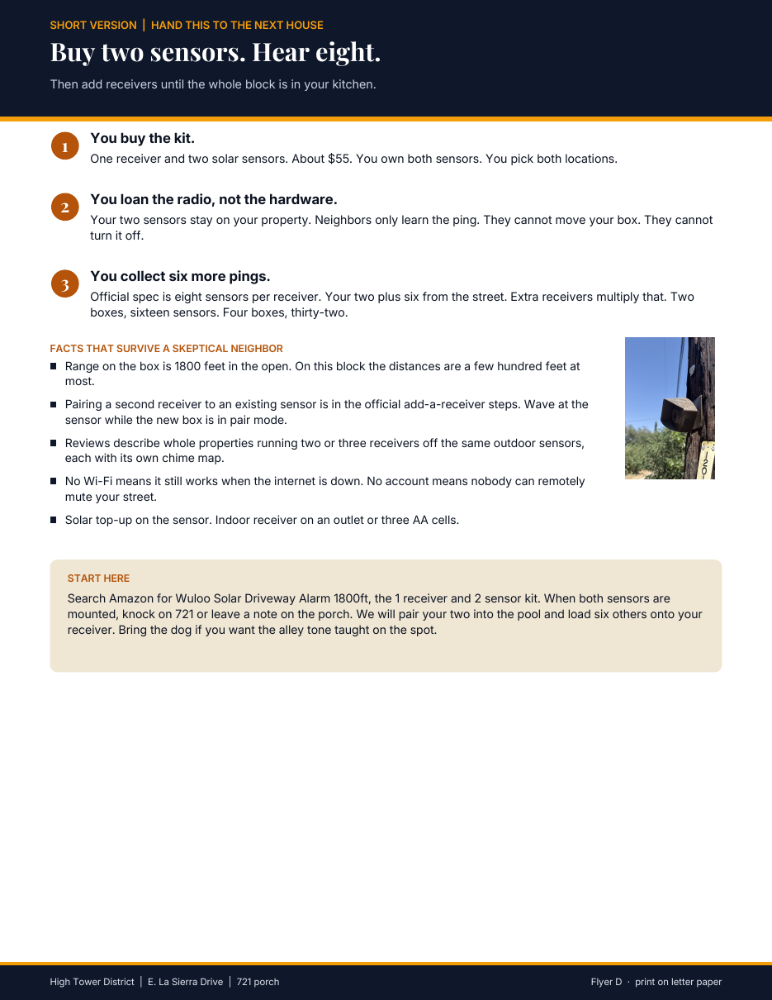
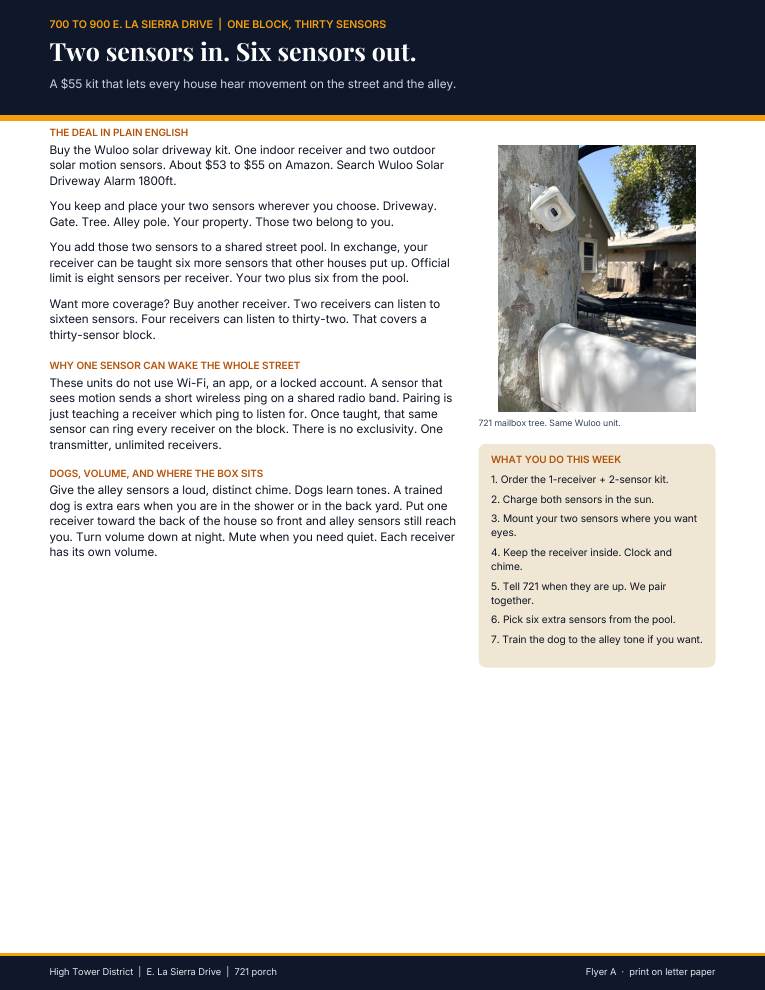
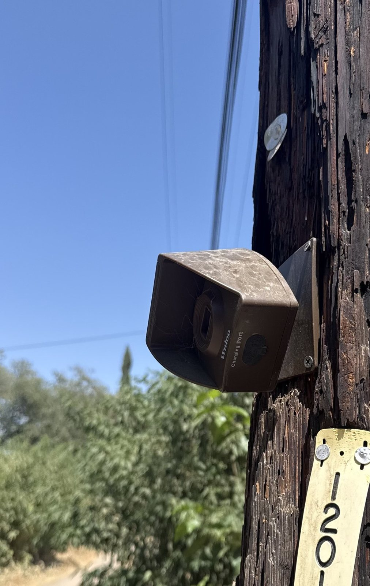

This is not a gadget story
Most people on this block are not going to pair a receiver because they love radio. They will pair it because they want to know when someone is in the alley while they are in the back, cooking, or in another room. A camera only works if you are looking at it. A chime works if you can hear.
Aaron Hightower already bought the Wuloo solar driveway kit, mounted sensors on the 721 mailbox tree, the fence post, and an alley pole, and checked the manuals and owner reports. One sensor sends a short wireless ping when it sees motion. Any receiver taught that ping will chime. There is no lock that says only one house can hear one sensor. That is the whole finding. Cheap hardware. Shared hearing.

How to use the stack
Do not hand every neighbor every page. Read the person first. Then print the one flyer that matches how they actually decide things. The PDFs keep their original names so you can find them on a phone or in Files without renaming anything.
Flyer A · first handout
Two sensors in. Six sensors out.
flyer_A_two_in_six_out.pdf
The full deal in plain English plus a seven-step checklist. Buy the kit. Place your two sensors. Add them to the street pool. Hear six more. Train the dog if you want. This is the default page when you do not know the neighbor well and you need one sheet that stands alone.
Best for: the first porch conversation. Someone who will read a page if it is short and concrete.
Open Flyer A
Flyer B · the skeptic sheet
Thirty sensors. One radio. No app.
flyer_B_thirty_sensors.pdf
Photo proof from 721 and the radio math. This is for the neighbor who thinks a sensor can only talk to the box it came with. Pairing is teaching a receiver a ping. Wave at an existing sensor with a second receiver in pair mode and that second house hears it too. Manuals and owner reports say the same thing.
Best for: the person who says it cannot work, or who wants to see that the units are already on the pole and the fence.
Open Flyer B
Flyer C · not a tech person
Train the dog to the alley tone.
flyer_C_alley_tone.pdf
This is the flyer for someone who does not care how a radio works. Placement. Volume. A receiver in the back room. A different chime for the alley than for the street. Walk the dog past the sensor while that tone plays. Property gets ears when nobody is looking at a screen.
Best for: dog houses, older neighbors, anyone who will buy safety and ignore specifications.
Open Flyer C
Flyer D · fence and door
Buy two sensors. Hear eight.
flyer_D_buy_two_hear_eight.pdf
Shortest page. Three rules and a start line. You buy the kit. You keep the hardware. You loan only the radio. You collect six more pings. Leave this one in a door, hand it across a fence, or give it to someone who will not stand still for a paragraph.
Best for: quick contact. The neighbor who is walking past. The house that already said maybe.
Open Flyer D
Packet · all four
One file. Four pages.
flyers_all_four.pdf
Same four flyers, already stacked, original names preserved inside the packet as page order A, B, C, D. Print this when you are going to a copy shop, or when you want every version in one tap. Still hand only one page to one neighbor. The packet is for you. The single flyer is for them.
Open all four
Which flyer to put in which hand
- They are polite but busy. Flyer D.
- They like dogs more than devices. Flyer C.
- They think wireless means a subscription. Flyer B, then A.
- They already have cameras and still miss the alley. Flyer C. This is the audio layer, not a replacement.
- They will actually sit and read. Flyer A.
- You are printing at a shop and walking the block. Packet, then tear off one page per house.
Print notes
Letter paper. One side. Color if you can. Black and white still reads. Do not shrink to fit. Do not print the HTML. Print the PDF that lives next to this page. Every link above points at a file in this same folder.
After they buy the kit, the ask is small. Mount the two sensors. Knock on 721 or leave a note. Pairing is a wave of the hand in front of a sensor while a receiver is in pair mode. No group chat required.
Sources for the radio claim
Wuloo manuals list eight sensors per receiver and a separate add-a-receiver path: put the new indoor box in pairing mode, then trigger the existing outdoor sensor. Owner reports describe two or three receivers ringing off the same sensors, each with its own chime. That is why thirty sensors can feed many houses without anyone giving up the two they paid for.
Field photos and flyers: 721 E. La Sierra Drive, Fresno, September 2, 2026. Product: Wuloo Solar Driveway Alarm, 1800 ft class, one receiver and two sensors, about $53 to $55.
Closing
The research is local. The cost is one kit. The safety is a sound in the house when something moves on the street or in the alley. If a neighbor does not care about technology, that is fine. Hand them Flyer C or Flyer D and talk about the dog, the back room, and fifty-five dollars. Keep the radio story for the person who asks how.